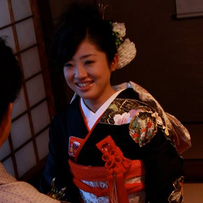

地酒仁藤の魅力
地酒仁藤 広報担当 仁藤○○
とにかく優しい（こんな平凡なコメント絶対いらないっすよね）
家でも基本的には仕事している（これ一般的には最低ですよね、うち的にはOKです。がんばりやさんなところは尊敬しています）
強い。小さな頃から、相手に嫌なことをされたら、相手が一番嫌がることをして仕返すという力を会得しているところが、かっこいいです（笑）。私にはない力で、その力が魅力的。
情報処理能力が高い。家のことも色々やってくれます。素晴らしいですね～。一家に一台、必需品。
パンチラを常に探す能力に長けている。これはどうかと思いますがね、おしゃべりしながら散歩していても、急にハンターの目になる瞬間があります。女性の行動の次を読み、チラリを逃しません。アホですね。（この側面をインターン生に言っていいのか…、彼がどんなキャラで皆さんに接しているのかがわからないので…、もしこの側面を出していないようだったら、相川さんの胸の中にとどめて下さい。怒られちゃう。）